◦◦◦◦◦◦◦◦◦◦◦◦◦◦Practica 4◦◦◦◦◦◦◦◦◦◦◦◦◦◦
Html Basico
¿Que es html?
- HTML es el lenguaje de marcado estándar para crear páginas web
- HTML describe la estructura de una página web
- HTML consta de una serie de elementos
- Los elementos HTML le dicen al navegador cómo mostrar
el contenido
- Los elementos HTML etiquetan partes de contenido como "esto es un encabezado", "esto es un párrafo", "esto es un enlace", etc.
Un documento HTML simple
Un navegador web (Chrome, Edge, Firefox, Safari) es leer documentos HTML y mostrarlos correctamente.
Un navegador no muestra las etiquetas HTML, pero las usa para determinar cómo mostrar el documento:
Ejemplo:
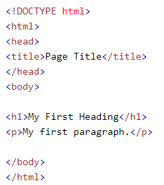 
Ejemplo explicado
- La !DOCTYPE html declaración define que este documento es un documento HTML5
- El html elemento es el elemento raíz de una página HTML.
- El head elemento contiene metainformación sobre la página HTML.
- El title elemento especifica un título para la página HTML (que se muestra en la barra de título del navegador o en la pestaña de la página)
- El body elemento define el cuerpo del documento y es un contenedor para todos los contenidos visibles, como encabezados, párrafos, imágenes, hipervínculos, tablas, listas, etc.
- El h1 elemento define un encabezado grande
- El p elemento define un párrafo
Estructura de la página HTML
Uno de los conceptos imprescindibles que debemos dominar a la hora de diseñar contenidos web es la estructura anidada de los documentos HTML. Los elementos suelen presentarse contenidos unos dentro de otros. Por lo general tenemos que empezar por diseñar la estructura HTML de la página para después continuar con los estilos, aplicando CSS.
En este ejemplo podemos ver los elementos más básicos que nos vamos a encontrar en prácticamente toda página web:
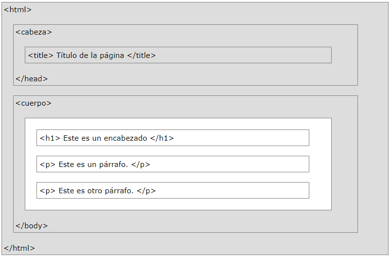
El elemento body está anidado es decir incluido dentro del elemento html. En términos de programación, body está colocado entre la etiqueta de apertura html y la de cierre /html, y por eso decimos que las etiquetas anidadas son las que se encuentran entre otras etiquetas de apertura y cierre. Ambos elementos, body y html, forman la estructura básica de toda página web.
Cuando un navegador abre un documento HTML busca esta estructura.
En HTML existen etiquetas de apertura y etiquetas de cierre, tienen la forma: <etiqueta> </etiqueta>. Donde <etiqueta> es la etiqueta de apertura y </etiqueta> es la etiqueta de cierre indicada por la diagonal. HTML tiene definidas gran variedad de etiquetas para distintos usos.
Aunque la mayoría de las etiquetas tienen su etiqueta de apertura y etiqueta de cierre, es importante aclarar que no todas las etiquetas tienen su correspondiente etiqueta de cierre.
Algunos ejemplos de etiquetas son:
Etiquetas con etiqueta de cierre
| Apertura | Cierre |
<html> | </html> |
<head> | </head> |
<body> | </body> |
<p> | </p> |
La etiqueta de apertura y la de cierre son las misma con la única diferencia de la diagonal "/" ,
es necesario la etiqueta de cierre para limitar el campo de acción de la etiqueta, por ejemplo a etiqueta (p) nos indica el inicio de un párrafo de texto y una vez que se escribe la etiqueta de apertura el navegador tomará como párrafo todo el texto que se encuentre después de dicha etiqueta hasta toparse con la etiqueta de cierre (/p) y así con las demás etiquetas según la función de cada una, la mayoría de las etiquetas de HTML son etiquetas de este tipo.
Etiquetas sin etiqueta de cierre
| Etiqueta |
<br> |
<img> |
<hr> |
<input> |
Ejemplos Básicos de HTML
La declaración ! DOCTYPE
La declaración representa el tipo de documento y ayuda a los navegadores a mostrar las páginas web correctamente.
- La declaración no distingue entre mayúsculas y minúsculas.
- Solo debe aparecer una vez, en la parte superior de la página (antes de cualquier etiqueta HTML).
La !DOCTYPE declaración para HTML5 es:
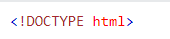
Encabezados HTML
Los encabezados HTML son títulos o subtítulos que desea mostrar en una página web.
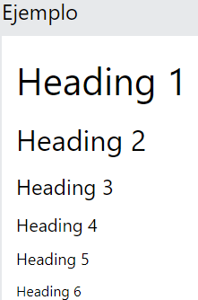
- Los encabezados HTML se definen con las etiquetas h1 to h6.
- h1 define el encabezado más importante.
- h1 Los títulos deben usarse para los títulos principales, seguidos de los h2 títulos, luego los menos importantes h3, y así sucesivamente.
- h6 define el encabezado menos importante:
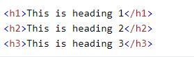
Párrafos HTML
Los párrafos HTML se definen con la etiqueta p :
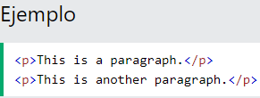
Enlaces HTML
El href atributo especifica la URL de la página a la que va el enlace.
Los enlaces HTML se definen con la etiqueta a :
 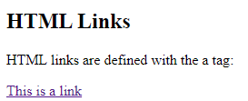
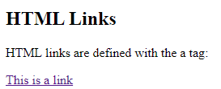
- El destino del enlace se especifica con el atributo href.
- Los atributos se utilizan para proporcionar información adicional sobre elementos HTML.
Imágenes HTML
Las imágenes HTML se definen con la etiqueta img.
- src: Es un atributo y especifica la ruta a la imagen que se mostrará
- alt: Es un atributo y especifica un texto alternativo para una imagen, si la imagen por alguna razón no se puede mostrar.
- Width y height: los atributos widthy height, que especifican el ancho y el alto de la imagen (en píxeles).
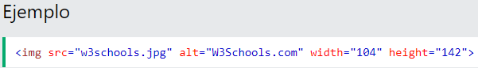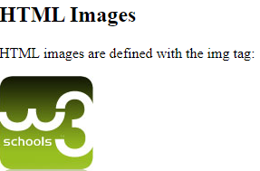
Hay dos formas de especificar la URL con el atributo src:
- 1. URL absoluta : enlaces a una imagen externa alojada en otro sitio web. Ejemplo: src = "https://www.w3schools.com/images/img_girl.jpg".
- 2. URL relativa : enlaces a una imagen alojada en el sitio web. Aquí, la URL no incluye el nombre de dominio. Si la URL comienza sin una barra, será relativa a la página actual. Ejemplo: src = "img_girl.jpg". Si la URL comienza con una barra, será relativa al dominio. Ejemplo: src = "/ images / img_girl.jpg".
Comentarios HTML
Los comentarios HTML no se muestran en el navegador, pero pueden ayudar a documentar su código fuente HTML.
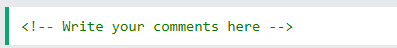
Otras Etiquetas
METADATOS DEL DOCUMENTO
- <style> </style >: Etiquetas usadas para introducir código CSS en línea, es decir, en el propio documento HTML.
ETIQUETAS PARA LA CREACIÓN DE TABLAS
- <table> </table >: Etiquetas de apertura y cierre de una tabla. El resto de etiquetas de la tabla han de ir siempre recogidas entre estas dos etiquetas.
- <td> </td >: Usada para definir una celda de una tabla.
- <tr> </tr >: Se usa para indicar una fila de celdas de una tabla.
ETIQUETAS PARA INCRUSTAR CONTENIDO
- <video> </video >: Se usa para reproducir video en la página web junto a sus archivos de audio y capciones asociadas.
- <audio> </audio >: Usada para cargar un archivo de audio o stream de audio.
ETIQUETAS SEMÁNTICAS PARA TEXTO
- <br>: Etiqueta utilizada para crear un salto de línea.
- <strong> </strong >: Etiqueta para definir una palabra o conjunto de ellas como importantes.
ETIQUETAS PARA LA AGRUPACIÓN DE CONTENIDO
- <figure> </figure >: Indica una figura ilustrada como parte del documento HTML5.
- <figcaption> </figcaption >: Utilizada para definir la leyenda de una figura.
- <div> </div >: Etiqueta común utilizada para crear un contenedor genérico.
ETIQUETAS DE SECCIONES
- <nav> </nav>: Usadas para definir el contenido que será la sección de navegación de la web.
- <footer> </footer >: Usadas para definir el pie de página.
- <header> </header >: Se usan para definir la cabecera la página web. Suele contener el logotipo, menú de navegación, etc.
- <article> </article >: Define contenido independiente de la web.
- <section> </section >: Define una sección del documento.
CSS Basico
¿Que es CSS?
- CSS son las siglas de Cascading Style Sheets
- CSS describe cómo se mostrarán los elementos HTML en la pantalla, el papel o en otros medios.
- CSS ahorra mucho trabajo. Puede controlar el diseño de varias páginas web a la vez
- Las hojas de estilo externas se almacenan en archivos CSS
Sintaxis de CSS
Una regla CSS consta de un selector y un bloque de declaración.

- La Regla: cada uno de los estilos que se aplican a una parte de la página en una hoja de estilos CSS. Cada regla esta compuesta de una parte de "selectores", un simbolo de "llave de apertura" ( { ), otra parte denominada "declaraciones" y por ultimo, un simbolo de "llave de cierre" ( } ).
- El Selector: indica el elemento o elementos HTML a los que se aplica la regla CSS.
- El Declaracion: especifica los estilos que se aplican a los elementos. Esta compuesta por una o mas propiedades CSS con sus valores.
- El Propiedad: permite modificar el aspecto de una caracteristica del elemento
- El Valor: indica el nuevo valor de la caracteristica modificada en el elemento.
ES-MX'>¿Cómo se usa el CSS en las páginas?
Se puede aplicar CSS para formatear cualquier documento HTML, de tres formas:
1- Css en linea: Se definen dentro del atributo "style" del elemento relevante.
Por ejemplo:
Mi casa es de color <span style="color: #2196f3;">azul</span>.
Esta técnica no es recomendada en la web moderna.
2- CSS interno: Se definen dentro del elemento <style>, dentro de la sección <head> de una página HTML:
<style>
blue{
color: #2196f3;
}
</style>
3- Css Externo: Se definen dentro del elemento <link>, dentro de la sección <head> de una página HTML:
<link href="estilo.css" rel="stylesheet"
type="text/css">
La ventaja de este último método es que permite aplicar las reglas a varias páginas al mismo tiempo y solo es necesario modificar el archivo ante cualquier actualización.
Selectores CSS Mas Usados
El selector de id de CSS
- El selector de clases selecciona elementos HTML con un atributo de clase específico.
- Para seleccionar elementos con una clase específica, escriba un punto (.), Seguido del nombre de la clase.
Ejemplo:
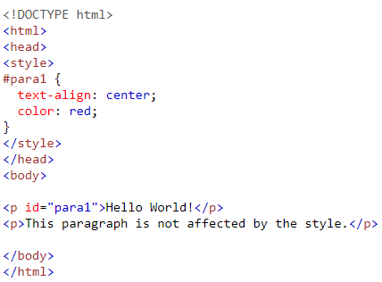 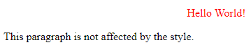
El selector de clases CSS
- El selector de id utiliza el atributo id de un elemento HTML para seleccionar un elemento específico.
- Para seleccionar un elemento con una identificación específica, escriba un carácter de almohadilla (), seguido de la identificación del elemento.
Ejemplo:
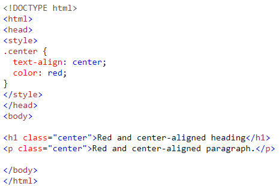 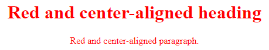
Ejemplos Básicos de CSS
Comentarios Css
Los comentarios se utilizan para explicar el código y pueden ayudar cuando edite el código fuente en una fecha posterior.
Ejemplo:
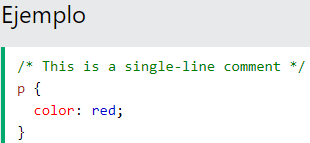
Colores Css
Los colores se especifican utilizando nombres de colores predefinidos o valores RGB, HEX, HSL, RGBA, HSLA.
Algunos nombres de colores CSS: red, green, white, black, pink, orange, purple, etc.
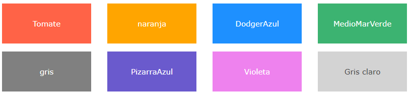
CSS / HTML admite 140 nombres de colores estándar .
Colores CSS HEX
- Un color hexadecimal se especifica con: #RRGGBB, donde los enteros hexadecimales RR (rojo), GG (verde) y BB (azul) especifican los componentes del color.
Fondos Css
Las propiedades de fondo de CSS se utilizan para agregar efectos de fondo a los elementos.
Algunos fondos Basicos son:
- background-color
- background-image
Color de fondo CSS
La background-colorpropiedad especifica el color de fondo de un elemento.
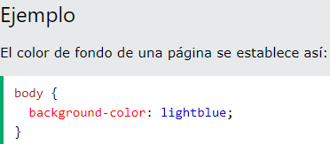Con CSS, un color suele especificarse mediante:
- Un nombre de color válido, como "rojo"
- Un valor HEX, como "# ff0000"
- Un valor RGB, como "rgb (255,0,0)
Imagen de fondo
La background-imagepropiedad especifica una imagen para usar como fondo de un elemento.
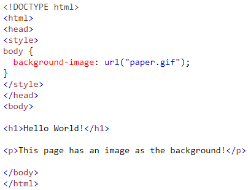 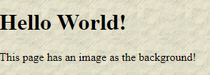
Alto y ancho de CSS
El CSS heighty las widthpropiedades se utilizan para establecer la altura y el ancho de un elemento.
Las propiedades heighty widthpueden tener los siguientes valores:
- auto: Esto es predeterminado. El navegador calcula la altura y el ancho
- length: Define la altura / ancho en px, cm, etc.
- %: Define la altura / ancho en porcentaje del bloque contenedor
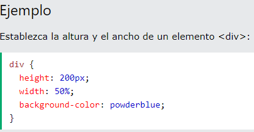 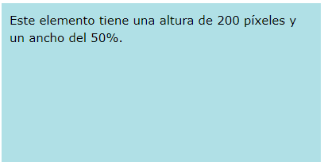
Texto Css
Color de texto
La propiedad color se utiliza para establecer el color del texto. Ejemplo:
h1 {
color: green;
}.
Quiere decir que el titulo sera de color verde.
Alineación del texto
La propiedad text-align se utiliza para establecer la alineación horizontal de un texto. Ejemplo:
h1 {
text-align: center;
}.
Quiere decir que el texto se va centrar; Tambien se puede usar left: para mostrar el texto hacia la izquierda y right: para mostrar el texto hacia derecha
Fuentes Css
Tipo de letra Css
Usamos la propiedad font-family para especificar la fuente de un texto. Por ejemplo:
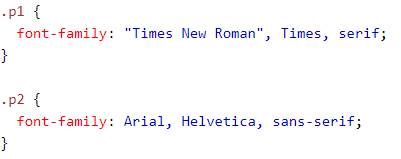
Tamaño de letra Css
La propiedad font-size establece el tamaño del texto.
El tamaño con pixeles
Ajustar el tamaño del texto con píxeles le da un control total sobre el tamaño del texto:
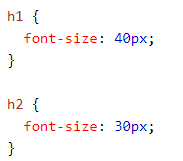
XML Basico
¿Que es XML?
- XML es una herramienta independiente de software y hardware para almacenar y transportar datos.
- XML es un lenguaje de marcado muy parecido al HTML.
- XML fue diseñado para almacenar y transportar datos.
- XML fue diseñado para ser autodescriptivo
¿Cómo se puede utilizar XML ?
- XML separa los datos de la presentación.
- XML es a menudo un complemento de HTML.
- XML separa datos de HTML.
Detalles de la sintaxis de XHTML
Sintaxis XHTML es muy similar al HTML sintaxis y casi todos los elementos HTML en XHTML válido. Pero cuando se escribe un documento XHTML tienes que pagar un poco más de atención para hacer que su documento HTML a XHTML compatible.
Aquí están los puntos importantes para recordar cuando escribir un nuevo documento XHTML o convertir los documento HTML a XHTML documento:
- Se necesita para escribir una declaración DOCTYPE en el inicio del documento XHTML.
- Atributo minimización está prohibido.
- Usted debe escribir todas las etiquetas y atributos XHTML sólo en minúsculas.
- Tiene que cerrar todas las etiquetas XHTML correctamente.
- Debe consignar todos los valores de atributo.
- El id atributo sustituye el atributo name.
- El idioma atributo de la etiqueta script está en desuso.
Preguntas
- 1.- ¿Que es un XML y para que sirve?
XML (Extensible Markup Language) es un lenguaje de etiquetas, es decir, cada paquete de información está delimitado por dos etiquetas como se hace también en el lenguaje HTML, pero XML separa el contenido de la presentación. Su objetivo es facilitar la representación, almacenamiento y trasmisión de información varia por parte de aplicaciones informáticas, computadoras y medios de comunicación digital en general.
- 2.- ¿Que caracteristicas tiene un documento XML?
XML es un formato universal para documentos y datos estructurados en Internet; este estándar permite el intercambio de información estructurada entre diferentes plataformas. Por lo que se puede usar en bases de datos, editores de texto, hojas de cálculo y casi cualquier cosa imaginable.
- 3.- ¿Que es y para que sirve un archivo XHTML?
El lenguaje XHTML surgió ante los problemas de compatibilidad que surgían cuando se usaba un documento HTML en distintas plataformas. La especificación XHTML viene a ser una reformulación del HTML como aplicación XML. En realidad, es una reformulación de las tres definiciones de tipo de documento HTML 4.0 como aplicaciones XML. Su finalidad es que pueda ser usado como lenguaje de contenidos que sea a su vez conforme a XML y, si se siguen algunas sencillas directrices, funciona en agentes de usuario (esto es, las aplicaciones que leen y procesan documentos) conformes con HTML
Conclusiones
-
-
Edward Fernando Perez Rocha
Los documentos HTML se pueden apoyar de muchos otros recursos como las hojas de estilos CSS, pero se debe de tener en consideracion las reglas y las maneras correctas de emplear las hojas de estilos. Tambien se puede utilizar el XML para definir lenguajes de marcado como el mismo HTML para darle un uso adecuado, ademas XML es muy parecido a HTML con unas muy pequeñas diferencias, pero ambos trabajan con etiquetas que marcan cada seccion del documento y en ambos casos las etiquetas cuentan con herencia, es decir etiquetas padre, etiquetas hijo y etiquetas hermanos.
-
Bryan Alberto Flores García
El XML es parecido a HTML, ya que se maneja por etiquetas, solo que en XML se podría decir que nosotros creamos las etiquetas, XML nos permite comunicar aplicaciones, procesando la información entre ellas de forma práctica. En general podemos decir que HTML se encarga de la estructura de la página y XML de la estructura de los datos. XML es una herramienta muy importante que tenemos a la hora de crear una página web, ya que nos facilita mucho en el apartado de los datos, si utilizamos XML tendremos una página más eficiente, por lo cual es importante saber acerca de este lenguaje.
-
Gerardo Carrera Torres
Aprender estos tipos de conceptos en HTML es muy importante ya que se pueden utilizar a medida que vas haciendo una pagina web ya sea para alguna practica que se tenga o tambien para cualquier pagina que se nos haya encargado ademas de que el aprender a manejar correctamente el css y html es de suma importancia si es que uno se quiere dedicar al front end en desarrollo web.
-
Shakty Betzahbe Salinas Huerta
XML en su calidad de estándar del sector para expresar datos estructurados, ofrece muchas ventajas a las organizaciones, desarrolladores de software, sitios Web y usuarios finales. Las oportunidades aumentarán cuantos más formatos de datos de mercado vertical se creen para mercados claves, como el mercado de búsquedas avanzadas en bases de datos, banca en línea, médico, legal, comercio electrónico, etc. Cuando los sitios ofrezcan datos, en lugar de limitarse a las vistas de datos, las oportunidades serán extraordinarias.
-
Diego Armando Hernandez Rivera
He concluido que el XHTML es muy util para realizar cualquier actividad dicese basica o con poca dificultad, mas sin embargo el CSS es un muy buen complemento para agregar diseño y estilo a una pagina web, fue divertido y emocionante redescubrir el formato de XHTML y comparar sus similitudes con CSS, todo esto con el fin de aprender que hay mas de una manera para hacer una pagina web.
Bibliografia
El Gran Libro de HTML5,CSS3 y Javascrip
Microsoft® CSS
w3schools